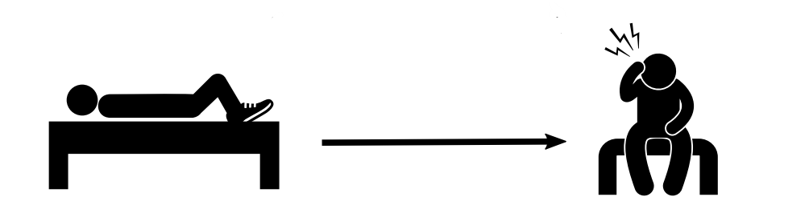
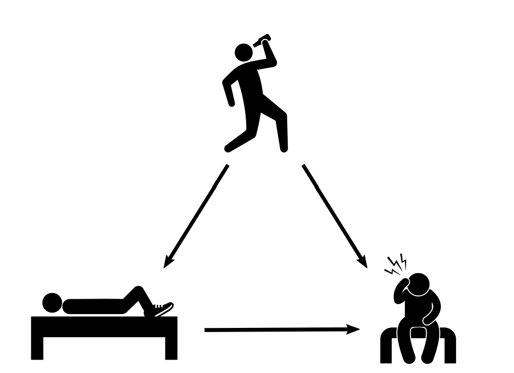
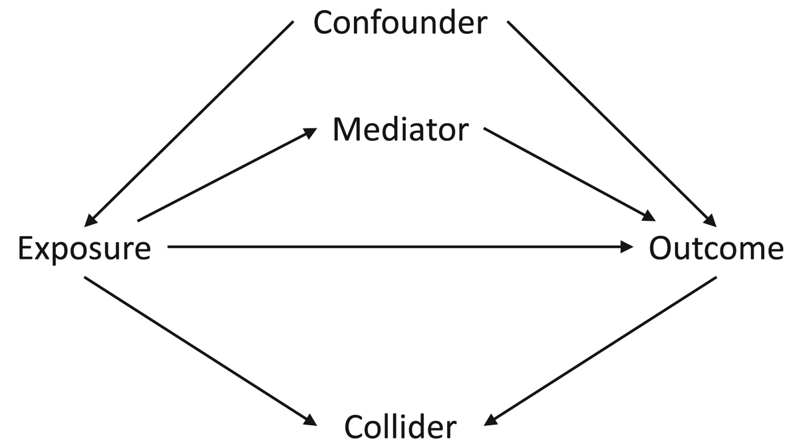

flowchart LR Z["Sonnenstunden Z"] --> D["Eisverkauf D"] Z --> Y["Sonnenbrände Y"] D -.-> Y
Einführung in die Kausale Inferenz
Von beobachteten Korrelationen zu begründeten Effekten
Dr. Oliver Schacht und Jan Teichert-Kluge
Sommerakademie der Studienstiftung des deutschen Volkes
Einstieg
Hat wer mit Schuhen geschlafen?
Na: Wer hat gestern am ersten Abend schon mit Schuhen im Bett geschlafen?
Menschen, die mit Schuhen einschlafen, berichten auffällig oft Kopfschmerzen am nächsten Morgen.
Verursachen Schuhe im Bett Kopfschmerzen?


Grafik: Brady Neal, Causal Inference from a Machine Learning Perspective
Ziel dieser Einführung 🎯
- Gestern haben wir verschiedene kausale Fragestellungen und Biases qualitativ beschrieben.
- Heute schauen wir darauf, wie wir diese Erkenntnisse quantifizieren.
Dazu sprechen wir über: - Potenzielle Outcomes und Counterfactuals - Das fundamentale Problem der kausalen Inferenz sowie das Simpson-Paradox - Wie man einen kausalen Effekt definiert - Identifikation von kausalen Effekten (Randomisierung oder DAGs)
Agenda
| Thema | Zugehörige App |
|---|---|
| Korrelation, Confounding, Simpson-Paradox | Korrelation \(\neq\) Kausalität |
| Potenzielle Outcomes, ATE, Zuteilungsmechanismen | Kausale Effekte & kontrafaktische Welten |
| DAGs, Adjustierung, Annahmen | Identifikation: DAGs & Confounding |
| Vertiefungen | Tools, CML und Bayes |
I. Von Mustern zu Interventionen
Notation
| Symbol | Bedeutung |
|---|---|
| \(D_i\in\{0,1\}\) | Treatment/Intervention für Einheit \(i\); \(D_i=1\) behandelt |
| \(Y_i\) | beobachtetes Outcome |
| \(Z_i\) (oder: \(X_i\)) | vor dem Treatment gemessene gemeinsame Ursache (Confounder) |
| \(Y_i(1),\;Y_i(0)\) | potenzielle Outcomes mit bzw. ohne Treatment |
| \(\theta\) | kausaler Effekt von \(D\) auf \(Y\) |
| \(E[\cdot]\) | Erwartungswert |
| \(E[\cdot \mid \cdot]\) | Bedingter Erwartungswert |
Drei Fragen
| Perspektive | Frage | Typische Größe |
|---|---|---|
| Vorhersage | Wie gut lässt sich \(Y\) prognostizieren? | \(\widehat{Y}=f(X)\) |
| Assoziation | Wie unterscheiden sich beobachtete Gruppen? | \(E[Y\mid D=d]\) |
| Kausalität | Wie unterscheiden sich mögliche Welten? | \(E[Y(1)-Y(0)]\) |
Die ersten beiden Fragen sind wichtig. Sie beantworten aber noch nicht, was eine Intervention bewirkt.

Grafik: HPCC Systems, Konzept nach Pearl.
Beobachtung und Kontrafaktual
Beobachtete Gruppen
\[ \operatorname{SDO} =E[Y\mid D=1]-E[Y\mid D=0] \]
Wir vergleichen Einheiten, die behandelt wurden, mit Einheiten, die nicht behandelt wurden.
Kausale Zielgröße
\[ \operatorname{ATE} =E[Y(1)]-E[Y(0)] \]
Wir vergleichen die Zielpopulation in zwei möglichen Behandlungszuständen.
Confounding liegt vor, wenn die beobachteten Gruppen kein glaubwürdiges Gegenstück für die jeweils fehlende potenzielle Welt liefern. Dann ist \(\operatorname{SDO}\) nicht der \(\operatorname{ATE}\).
Confounding
Der gestrichelte Pfeil \(D\rightarrow Y\) ist die Frage, die uns interessiert. Der Pfad
\[D \leftarrow Z \rightarrow Y\]
liefert jedoch zusätzlich eine nicht-kausale Assoziation: An sonnigen Tagen sind Eisverkauf und Sonnenbrände beide hoch, auch wenn Eis keinen Sonnenbrand verursacht.
Demo: Confounding 🎛️
In der App Korrelation \(\neq\) Kausalität wird diese Datenwelt simuliert:
\[ D=aZ+\varepsilon_D, \qquad Y=\theta D+bZ+\varepsilon_Y. \]
- \(\theta\) (bzw. in der App \(c\)) ist der wahre kausale Effekt.
Was passiert mit der einfachen Regressionsgeraden von \(Y\) auf \(D\)? Und was ändert sich, wenn wir für \(Z\) adjustieren?
Confounding Bias
Wenn \(Z\) sowohl \(D\) als auch \(Y\) beeinflusst, gilt im linearen Modell:
\[ \underbrace{\beta_{\mathrm{naiv}}}_{Y\sim D} = \underbrace{\theta}_{\text{gesuchter Effekt}} + \underbrace{b\frac{\operatorname{Cov}(D,Z)}{\operatorname{Var}(D)}}_{\text{Bias durch }Z}. \]
Die Regression ist nicht „schlecht gerechnet“. Sie beantwortet schlicht eine andere Frage: den beobachteten Zusammenhang zwischen \(D\) und \(Y\).
Wichtige Konsequenz: Mehr Daten beseitigen systematischen Bias nicht. Sie machen eine verzerrte Schätzung nur präziser.
Simpson-Paradox: Der Aggregattrend kann täuschen
Wir betrachten eine Studie zu Weiterbildungsstunden und Gehalt. Ist der Zusammenhang wirklich negativ?
| Erfahrungsgruppe | Typische Weiterbildungsstunden | Typisches Gehalt | Zusammenhang innerhalb der Gruppe |
|---|---|---|---|
| 0–3 Jahre | hoch | niedrig | positiv |
| 4–10 Jahre | mittel | mittel | positiv |
| >10 Jahre | niedrig | hoch | positiv |
| Alle zusammen | - | - | kann negativ sein |
Die Berufserfahrung \(Z\) beeinflusst zugleich Weiterbildung \(D\) und Gehalt \(Y\).
Zwischenfazit
Ein statistischer Zusammenhang (Korrelation) kann
- durch einen gemeinsamen Treiber entstehen,
- nach einer Aufschlüsselung schwächer, stärker oder gegenläufig sein,
- für Vorhersage nützlich sein obwohl er nicht kausal ist.
Merke:
- Daten allein sagen nicht, welche Variablen verglichen oder kontrolliert werden sollen.
- Wir brauchen ein Modell darüber, wie die Daten entstanden sind.
II. Was ist ein kausaler Effekt?
Potenzielle Outcomes: Definition kausaler Effekte
Für eine Person \(i\) definieren wir zwei potenzielle Outcomes:
Mit Treatment
\[Y_i(1)\]
Outcome, falls Person \(i\) behandelt würde.
Ohne Treatment
\[Y_i(0)\]
Outcome, falls dieselbe Person \(i\) nicht behandelt würde.
Der individuelle kausale Effekt ist
\[\operatorname{ITE}_i=Y_i(1)-Y_i(0).\]
Das Orakel schaut in die Glaskugel
Beispiel aus der App: Ein Medikament soll einen Gesundheits-Score verbessern.
| Person | \(Y_i(0)\) ohne Behandlung | \(Y_i(1)\) mit Behandlung | \(\operatorname{ITE}_i\) |
|---|---|---|---|
| A | 45 | 60 | +15 |
| B | 50 | 62 | +12 |
| C | 55 | 65 | +10 |
| D | 60 | 72 | +12 |
| … | … | … | … |
Mit einem Orakel könnten wir für jede Person eine Differenz bilden und dann mitteln.
Wie verändert sich das, wenn wir in die reale Welt wechseln?
In einer realen Studie existiert für jede Person jedoch nur eine beobachtete Welt.
Das fundamentale Problem
\[ Y_i=D_iY_i(1)+(1-D_i)Y_i(0). \]
| Treatmentstatus | Beobachtbar | Kontrafaktisch |
|---|---|---|
| \(D_i=1\) | \(Y_i(1)\) | \(Y_i(0)\) |
| \(D_i=0\) | \(Y_i(0)\) | \(Y_i(1)\) |
Für dieselbe Einheit zur selben Zeit sehen wir nie \(Y_i(1)\) und \(Y_i(0)\).
Durchschnittliche Effekte
Weil individuelle Effekte im Allgemeinen nicht direkt beobachtbar sind, schauen wir auf Populationsebene:
\[ \operatorname{ATE} =E\big[Y(1)-Y(0)\big] =E[Y(1)]-E[Y(0)] \]
Der Average Treatment Effect (ATE) beantwortet:
Wie stark würde sich das Outcome im Mittel ändern, wenn alle in der Population behandelt wären?
Der naive Vergleich
Die naheliegende Rechnung ist
\[ E[Y\mid D=1]-E[Y\mid D=0]. \]
Für die behandelte Gruppe beobachten wir \(Y(1)\), für die Kontrollgruppe \(Y(0)\):
\[ E[Y(1)\mid D=1]-E[Y(0)\mid D=0]. \]
Es fehlt genau die zentrale Größe \(E[Y(0)\mid D=1]\): Wie wäre es der behandelten Gruppe ohne Behandlung ergangen?
Das ist die formale Definition von Selection Bias: Die Gruppen können sich bereits ohne Treatment unterscheiden.
Zerlegung der Gruppendifferenz
Mit \(\pi=P(D=1)\) lässt sich die beobachtete Mittelwertdifferenz (Simple Difference in Outcomes, SDO) schreiben als
\[ \begin{aligned} \operatorname{SDO} &= \operatorname{ATE}\\ &\quad+ \underbrace{E[Y(0)\mid D=1]-E[Y(0)\mid D=0]}_{\text{Selection Bias}}\\ &\quad+ \underbrace{(1-\pi)\big(\operatorname{ATT}-\operatorname{ATU}\big)}_{\text{Heterogeneous Treatment Effect Bias}}. \end{aligned} \]
- Selection Bias: Behandelte und Unbehandelte hätten sich ohne Treatment unterschieden.
- Heterogene Effekte: Der Effekt ist bei Behandelten und Unbehandelten unterschiedlich.
Diese Gleichung zeigt, welche Annahmen der einfache Gruppenvergleich benötigt, um den ATE zu messen.
Kurze Übung 🧠
- Eine Ärztin gibt das Medikament bevorzugt besonders schwer erkrankten Personen.
- Die behandelte Gruppe erzielt danach einen niedrigeren Gesundheits-Score als die Kontrollgruppe.
- Formalisiert dies im Potential Outcomes Framework.
- Welchen Bias würdet ihr erwarten im SDO?
- Was müsste sich am Zuteilungsmechanismus ändern, damit die Gruppen vergleichbar werden?
Zwischenfazit: Kausaler Workflow
| Schritt | Leitfrage | Beispiel |
|---|---|---|
| Kausale Frage | Welche Intervention? | Wirkt das Medikament? |
| Estimand | Welche Zielgröße? | \(\operatorname{ATE}\) |
| Identifikation | Wann ist sie aus Daten lernbar? | zufällige Zuweisung |
| Estimator | Welche Rechenvorschrift? | Differenz der Mittelwerte |
| Estimate | Welcher Stichprobenwert? | \(+7{,}4\) Punkte |
Identifikation kommt vor Schätzung.
III. Der Zuteilungsmechanismus entscheidet
Treatment Assignment
flowchart TB A["Schwere Erkrankung Z"] --> B["Ärztliche Auswahl D"] A --> C["Gesundheits-Score Y"] B --> C R["Zufallszahl"] --> D["Randomisierte Zuweisung"] D --> E["Gesundheits-Score Y"]
- Beobachtungsstudie: Schwerere Patient:innen erhalten häufiger \(D=1\).
- Randomisierte Studie: Die Zuweisung enthält systematisch keine Information über die potenziellen Outcomes.
Demo: Randomisierung 🎛️
Die App simuliert einen wahren Behandlungseffekt von \(+8\) Punkten.
- Was ändert eine größere Stichprobe bei Selbstselektion / ärztliche Auswahl?
- Ist der Effekt bei randomisierter Zuweisung unbiased?
- Hilft eine größere Stichprobe bei Randomisierung?
Randomisierung
Ideale Randomisierung bedeutet
\[ \big(Y(1),Y(0)\big)\perp D. \]
Damit sind behandelte und unbehandelte Einheiten im Mittel austauschbar. Insbesondere:
\[ E[Y(0)\mid D=1]=E[Y(0)\mid D=0]. \]
Folglich identifiziert die beobachtete Mittelwertdifferenz den ATE:
\[ E[Y\mid D=1]-E[Y\mid D=0]=E[Y(1)]-E[Y(0)]. \]
Randomisierung: Grenzen
- Randomisierung gilt als Goldstandard der kausalen Inferenz.
- So einfach ist es aber nicht:
- In kleinen Stichproben können zufällige Ungleichgewichte entstehen.
- Non-Compliance verändert den relevanten Estimand und braucht eine passende Analyse.
Häufig ist Randomisierung technisch oder ethisch unmöglich.
Wenn Randomisierung nicht greift, müssen wir schauen: Welche kausale Rolle spielen unsere Variablen?
IV. DAGs: Annahmen sichtbar machen
DAGs
Ein Directed Acyclic Graph (DAG) zeichnet Annahmen über den Datenentstehungsprozess auf.
- Knoten: Variablen
- gerichtete Pfeile: direkte kausale Einflüsse
- azyklisch: keine Variable verursacht sich über einen Pfeilpfad selbst
Drei Strukturen

Grafik: Evolutionary Human Sciences, Abb. 1.
| Rolle | Struktur | Konsequenz |
|---|---|---|
| Confounder \(Z\) | \(D\leftarrow Z\rightarrow Y\) | für \(Z\) adjustieren kann helfen |
| Mediator \(M\) | \(D\rightarrow M\rightarrow Y\) | beim totalen Effekt nicht adjustieren |
| Collider \(C\) | \(D\rightarrow C\leftarrow Y\) | nicht adjustieren / selektieren |
Die gleiche gemessene Variable kann je nach kausaler Geschichte jede dieser Rollen spielen.
Confounder
flowchart LR Z["Produktinteresse Z<br/>"] --> D["Werbung D"] Z --> Y["Kauf Y"] D --> Y
Das frühere Produktinteresse beeinflusst Targeting und Kauf; zur Identifikation ist Adjustierung nötig.
Wenn \(Z\) ausreichend gemessen ist, vergleichen wir innerhalb gleicher \(Z\)-Werte und mitteln anschließend über die Zielpopulation.
Backdoor-Kriterium
Eine Menge \(Z\) ist für den totalen Effekt von \(D\) auf \(Y\) geeignet, wenn sie
- keine Nachfahren von \(D\) enthält und
- jeden Pfad zwischen \(D\) und \(Y\) blockiert, der mit einem Pfeil in \(D\) beginnt.
Für den einfachen Graphen \(D\leftarrow Z\rightarrow Y\) genügt es, auf \(Z\) zu konditionieren.
„Wir kontrollieren für alles Messbare“ ist keine Identifikationsstrategie: Mediatoren ändern den Estimand, Collider öffnen Bias-Pfade.
Die Adjustierungsformel
Unter Annahmen gilt für eine diskrete Confounder-Menge \(Z\):
\[ \operatorname{ATE} =\sum_z \left( E[Y\mid D=1,Z=z]-E[Y\mid D=0,Z=z] \right)P(Z=z). \]
Interpretation in drei Schritten:
- Vergleiche Behandelte und Unbehandelte bei gleichem \(Z=z\).
- Berechne die bedingte Differenz für jedes \(z\).
- Gewichte diese Differenzen entsprechend der Zielpopulation.
Mediator
flowchart LR D["Werbung D"] --> M["Produktinteresse M"] M --> Y["Kauf Y"] D --> Y
Hier entsteht Interesse durch die Werbung. Der Pfad \(D\rightarrow M\rightarrow Y\) gehört zum Wirkmechanismus.
- Ohne Adjustierung für \(M\): totaler Effekt der Werbung.
- Mit Adjustierung für \(M\): nur der direkte Anteil, der nicht über Interesse verläuft.
„Kontrolliert für \(M\)“ ist nicht automatisch besser. Es kann eine andere kausale Frage beantworten.
Collider
flowchart LR D["Werbung D"] --> C["Klick auf Produktseite C"] Y["Kaufneigung / Kauf Y"] --> C D --> Y
Wenn wir nur Klickende analysieren oder für \(C\) kontrollieren, konditionieren wir auf eine gemeinsame Folge von \(D\) und \(Y\).
Dadurch öffnen wir einen künstlichen Zusammenhang zwischen Werbung und Kaufneigung: Collider- bzw. Selektionsbias.
Demo: Adjustierung 🎛️
In der DAG-App nutzt dieselbe Variable \(W\) drei verschiedene Geschichten:
| Einstellung | Schätzung ohne Adjustierung | Schätzung mit Adjustierung für \(W\) |
|---|---|---|
| Confounder | verzerrt | näher am wahren Effekt |
| Mediator | totaler Effekt | direkter statt totaler Effekt |
| Collider | unproblematisch | künstlich verzerrt |
Drei typische Annahmen
Für eine klar definierte Intervention und eine geeignete Menge \(Z\) benötigen wir:
- Konsistenz / wohldefiniertes Treatment: Das beobachtete Outcome entspricht dem passenden potenziellen Outcome. Es gibt keine für die Frage relevanten unterschiedlichen Treatment-Varianten oder Interferenzen zwischen Einheiten.
- Bedingte Austauschbarkeit: Nach Adjustierung für \(Z\) ist die Zuweisung unabhängig von den potenziellen Outcomes: \[\big(Y(1),Y(0)\big)\perp D\mid Z.\]
- Positivität (Overlap): Für jedes relevante \(z\) gibt es beide Treatmentzustände: \[0<P(D=1\mid Z=z)<1.\]
- Fachwissen, Design und Diagnostik können diese Annahmen plausibel machen.
- Allein aus den beobachteten Daten lassen sie sich nicht beweisen.
Ausblick: Vertiefungen in der Gruppenarbeit 🔭
1. Causal Discovery: Welche Graphen passen zu den Daten?
Die DAG-App zeigt eine Kette \(X\rightarrow Z\rightarrow Y\): \(X\) und \(Y\) sind korreliert, nach Kontrolle für \(Z\) aber (nahezu) unabhängig.
Algorithmen wie PC, GES oder NOTEARS nutzen solche Muster bedingter Unabhängigkeit. Sie können die Kausalstruktur unter Annahmen eingrenzen; Daten bestimmen ihre Richtung jedoch meist nicht eindeutig.
2. Difference-in-Differences: Ein Kontrafaktual über Zeit
Bei einer Reform (Mindestlohn, Tankrabatt) vergleichen wir die Veränderung einer betroffenen mit der Veränderung einer Kontrollgruppe:
\[ \widehat{\theta}_{\mathrm{DiD}} =\big(\bar{Y}_{\mathrm{Treat,post}}-\bar{Y}_{\mathrm{Treat,pre}}\big) -\big(\bar{Y}_{\mathrm{Control,post}}-\bar{Y}_{\mathrm{Control,pre}}\big). \]
Die tragende Annahme heißt Parallel Trends: Ohne Reform hätten sich beide Gruppen im Mittel parallel entwickelt.
In der App testen: Einen Extra-Trend der Reformregion einschalten und beobachten, wie DiD präzise den falschen Effekt schätzt.
3. Regression Discontinuity: Das lokale Experiment am Cutoff
Ein Stipendium wird ab einer Testpunktzahl \(c_0\) vergeben. Knapp ober- und unterhalb des Cutoffs sollen Personen vergleichbar sein.
\[ \theta_{c_0} =\lim_{x\downarrow c_0}E[Y\mid X=x] -\lim_{x\uparrow c_0}E[Y\mid X=x]. \]
- Der Effekt ist lokal: Er gilt am Cutoff, nicht automatisch für alle.
- Ohne Treatment dürfen die potenziellen Outcomes am Cutoff keinen Sprung haben.
- Die Wahl der Bandbreite steuert den Kompromiss aus Nähe und Präzision.
4. Causal ML: ML ersetzt keine Identifikation
Bei vielen, nichtlinear wirkenden Confoundern \(X\) nutzt Double/Debiased ML das partiell lineare Modell
\[ Y=\theta D+g(X)+\zeta, \qquad D=m(X)+\nu. \]
ML schätzt die unbekannten Funktionen \(g\) und \(m\); anschließend wird der Effekt aus den bereinigten Residuen geschätzt.
5. Bayesianische Methoden: Annahmen und Unsicherheit explizit machen
Bayes verbindet Vorwissen und Daten:
\[ p(\theta\mid \text{Daten})\propto p(\text{Daten}\mid\theta)\,p(\theta). \]
In der App lässt sich beobachten, wie Prior und Studiendaten die Posterior-Verteilung einer Behandlungswirksamkeit formen.
- Ein Prior ist eine explizite Annahme, keine versteckte Voreinstellung.
- Kleine Studien reagieren stark auf plausible Vorannahmen.
- Sensitivitätsanalysen zeigen, wie robust Schlussfolgerungen gegenüber ihnen sind.
Abschluss
Takeaways 🧳
- Ein beobachteter Zusammenhang beantwortet nicht automatisch eine Interventionsfrage.
- Ein kausaler Effekt vergleicht potenzielle Outcomes derselben Einheit; eines davon ist kontrafaktisch.
- Ein glaubwürdiger Zuteilungsmechanismus oder ein begründetes Design macht den fehlenden Vergleich identifizierbar.
- Kontrollvariablen werden aus dem DAG gewählt. Confounder nützen; Mediatoren oder Collider können potenziell schaden.
Künstliche Intelligenz und das Warum · Kausale Inferenz